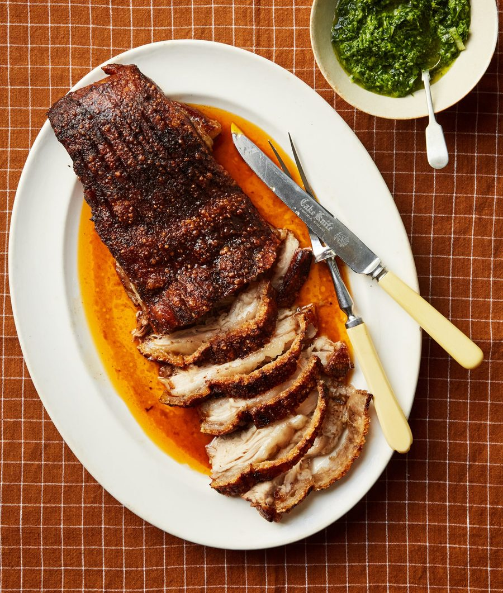

Slow-roast pork belly with spring onion mojo verde

There’s something about its perfect balance of crunch and tenderness that makes roast pork belly such a timeless favourite, and slow-roasting fills the kitchen with comforting aromas that make you hungry long before the meat is anywhere near ready. I like to serve it with mojo verde, a vibrant sauce from the Canaries that’s often served with papas arrugadas, the island’s wonderfully salty and wrinkled take on potatoes. The sauce’s fresh, herby flavour works beautifully with roast meat, too, and brings a bright contrast to rich, crisp pork in particular.
For the mojo verde
Heat the oven to 220C (200C fan)/425F/gas 7. Rub the pork belly all over with the olive oil, pimentón and some salt, ensuring they all get right into the scores, then put it in an oven tray and roast for 30 minutes.
Turn down the oven to 160C (140C fan)/325F/gas 3. Mix the honey, sherry and stock in a small bowl or jug, add the lemon zest, then pour around the pork in the tray. Cover tightly with foil and roast for a further two and a half hours.
When the time is up, take off the foil lid, turn the heat back up to 220C (200C fan)/425F/gas 7, and cook for a final 20 minutes, to crisp up the crackling. Remove and leave to rest for at least 10 minutes before carving.
While the pork is finishing off cooking, make the mojo verde. Put the spring onions, garlic, chilli, coriander, parsley, sherry vinegar and oil in a blender, pulse to a rough paste, then season to taste.
Slice the pork belly and serve with any pan juices and the mojo verde drizzled over the top.